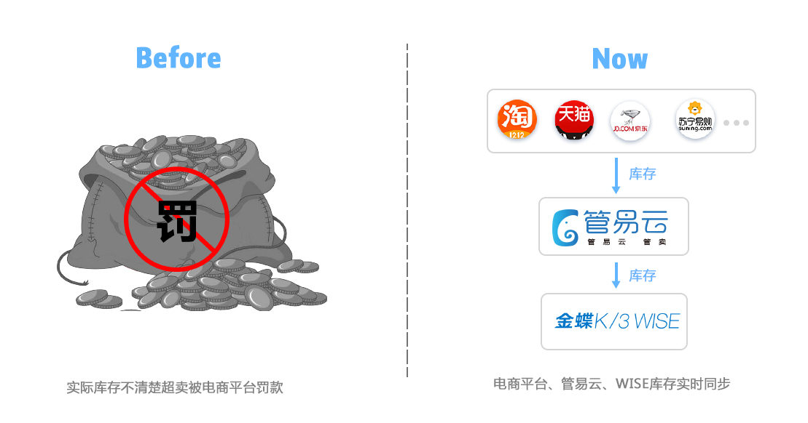
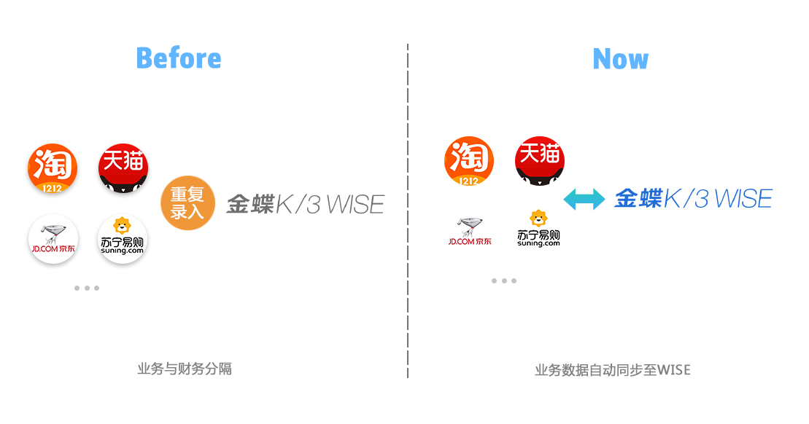
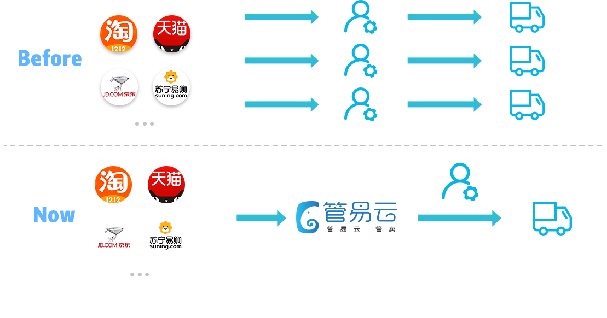

解决方案价值亮点“库存一体管理”
实现线下库存与线上电商平台库存一体化管理，将线下的库存同步到电商平台，线上电商订单发货直
接扣减线下库存，保证库存精准，帐实一致。

解决方案价值亮点“经营结果”
通过线下管理系统进行销售入账，财务核算，完整核算利润情况，展示经营结果。

解决方案价值亮点“业务账务一体”
上线下数据共享，电商业务与线下财务一体，攻破线上业务信息孤岛，精准获取数据，最终进行准确的财务核算，
支付宝直接生产凭证。

解决方案价值亮点“订单高效管理”
提供快速发货平台，多个电商平台订单统一显示，集中处理。
